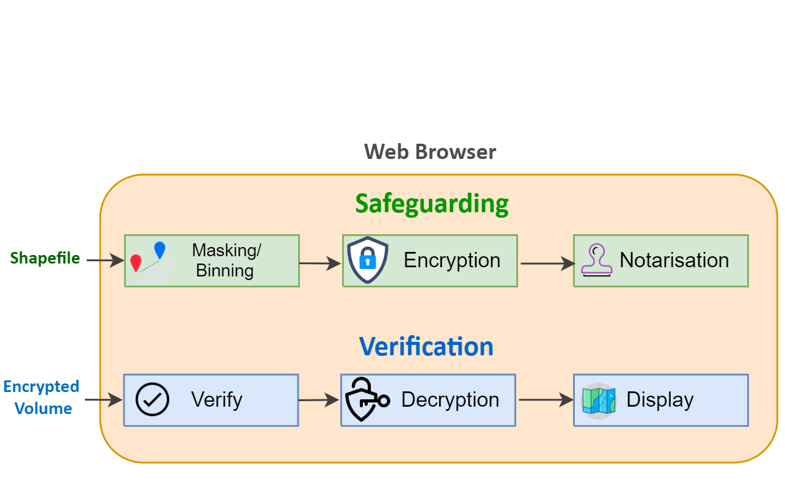

MapSafe provides end-to-end protection for sensitive geospatial datasets through obfuscation, encryption, and notarisation. These capabilities are implemented directly within the browser using widely adopted open-source JavaScript libraries, removing the need for any software installation or downloads.
Designed for a broad range of users—from GIS professionals and researchers to beginners—MapSafe simplifies the process of securing geospatial data, making robust and previously complex protection techniques accessible and easy to apply.

MapSafe employs three complementary techniques to fully protect sensitive geospatial datasets.
These techniques are applied sequentially to ensure layered and robust data security.
MapSafe enables users to apply geomasking or binning techniques to obscure precise coordinates. This allows maps to be shared with approximate locations that preserve overall spatial patterns, while reducing the risk of exposing sensitive information or compromising individual privacy.
The masked geospatial dataset is further secured through encryption, transforming the data into a form that is not recoverable by an adversary. MapSafe utilises the Web Crypto API, a cryptographic toolkit built directly into modern web browsers.
Finally, MapSafe generates a hash of the encrypted, obfuscated geospatial data and notarises it as a public record on the tamper-proof Ethereum blockchain. This ensures the digital signature remains unchanged and can be reliably used to verify the integrity of the encrypted dataset.
This video shows how to safeguard and verify your dataset, from start to finish.
The verification process compares the hash of the encrypted file with the corresponding value recorded on the Ethereum blockchain, after which the user can proceed with decryption and display of the dataset.
The sovereign party loads the encrypted dataset, after which MapSafe generates a hash for verification against the value stored on the blockchain. A match confirms that the data has not been tampered with, allowing the user to proceed with decryption.
Decryption applies the encryption key to restore the data from its protected form. Depending on the recipient’s access level, a passphrase of a specified strength is provided, enabling decryption to a corresponding level that reveals different representations of the original data.
In the final step, the geospatial dataset is presented at varying levels of resolution. Based on their access privileges, users are shown either the original dataset or an appropriately masked representation.